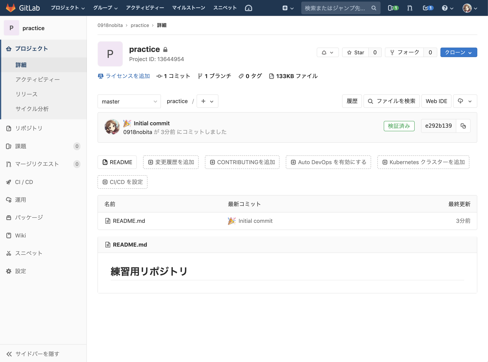

プッシュ
ローカルリポジトリでの変更をリモートリポジトリに反映する方法が プッシュ です。
これと、後述する「フェッチ」「マージ」を利用することで、開発に関わる各人がリモートリポジトリに自分が行った変更を反映したり、他の人がリモートリポジトリに対して反映した変更を自らのローカルリポジトリに反映して作業を続行したりできます。

【やること10】 以下のコマンドを実行してプッシュしてください。
git push origin master
毎回パスワードが要求される場合の対応策
~/.ssh/config に設定を追記することで解決するようです。
秘密鍵のパス (ここでは ~/.ssh/id_rsa) については、環境ごとに適切なパスを指定してください。
macOS の場合
Host github.com
HostName github.com
Port 22
User git
IdentityFile ~/.ssh/id_rsa
AddKeysToAgent yes
UseKeychain yes
Linux の場合
Host github.com
HostName github.com
Port 22
User git
IdentityFile ~/.ssh/id_rsa
AddKeysToAgent yes
【やること11】 GitLab で作成したリモートリポジトリのページまで行き、正しくプッシュできていることを確認してください。

自分で新規にリポジトリを作成してコミット・プッシュしてみるハンズオンはここで終了です。
ここから先では、すでに存在するリモートリポジトリに自分が変更を加え、他の人と連携して作業を進めていく方法について扱っていきます。